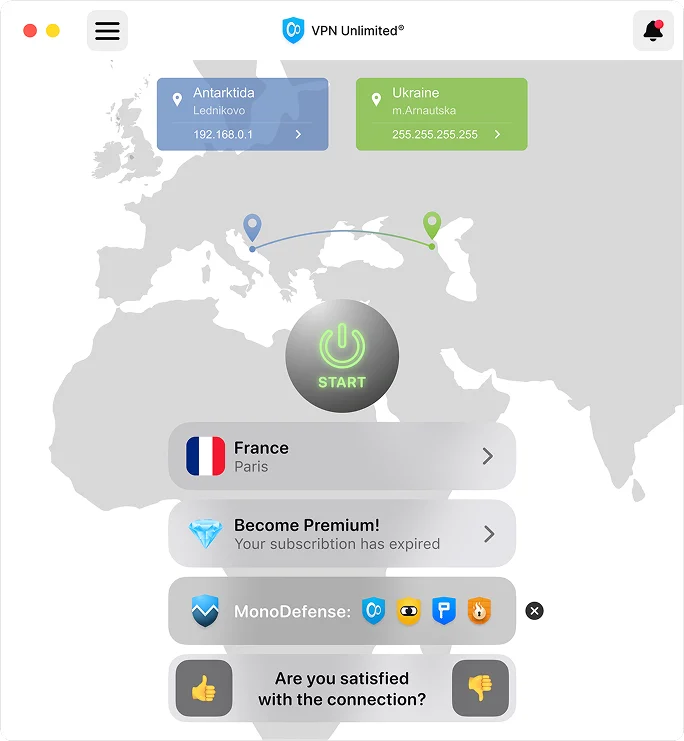

Baixar VPN para Mac
Versões da Mac App Store e standalone disponíveis
macOS Mojave 10.14 ou posterior
Vantagens:
- Criptografia segura de dados
- Fácil de usar no seu dispositivo
- Acesso a 3000 servidores no mundo todo

VPN para Mac
Proteja o tráfego em Mac com o VPN Unlimited, oculte seu IP e conecte-se a um servidor VPN privado em segundos.
Obtenha o VPN Unlimited para outras plataformas
Baixe o aplicativo VPN para outras plataformas e também para Windows. Rápido, seguro e ilimitado!
Avaliação grátis de 7 diasGarantia de reembolso de 30 dias